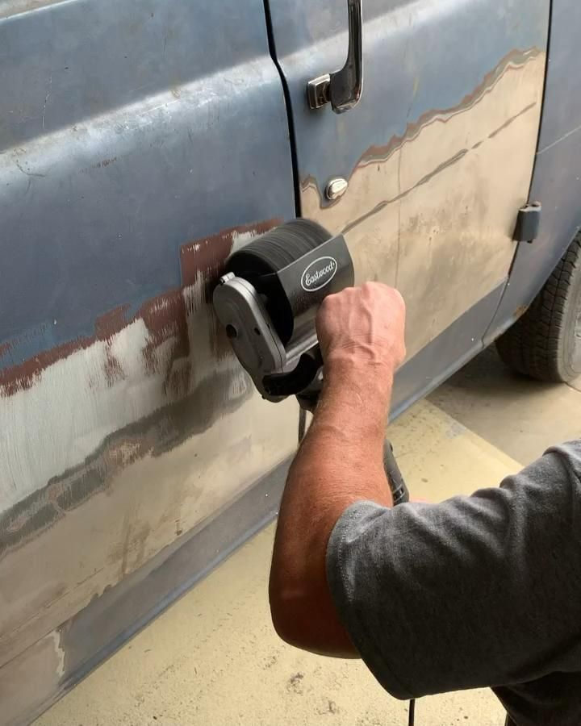
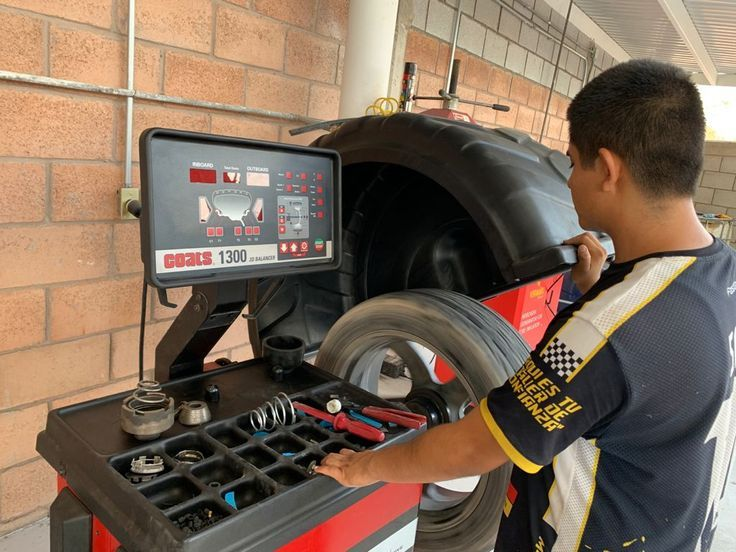
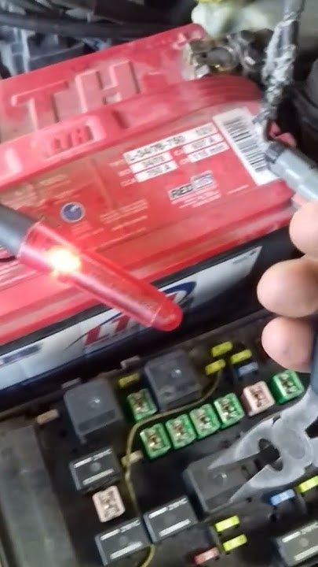
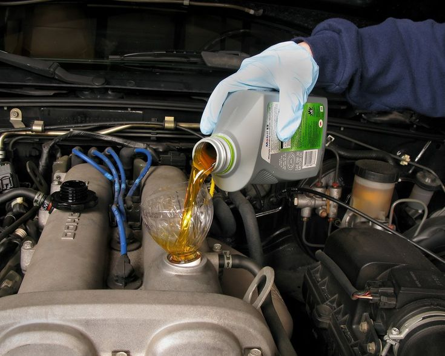
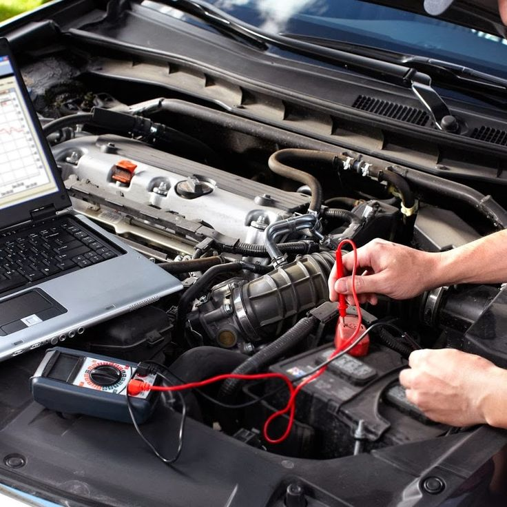

Reparación Automotriz
Mantenimiento preventivo y correctivo para todo tipo de vehículos. Nuestro equipo está altamente capacitado para resolver cualquier problema mecánico.

Latonería y Pintura
Restauración de la carrocería y aplicación de pintura de alta calidad para que tu vehículo luzca como nuevo.

Alineación y Balanceo
Mejora la estabilidad y el desgaste de los neumáticos con nuestros servicios de alineación y balanceo.

Electricidad Automotriz
Diagnóstico y reparación del sistema eléctrico de tu auto para asegurar su correcto funcionamiento.

Cambio de Aceite
Servicio rápido de cambio de aceite con productos de la más alta calidad para prolongar la vida útil del motor.

Diagnóstico Computarizado
Utilizamos la última tecnología para detectar fallas en el sistema de tu vehículo de manera precisa y rápida.